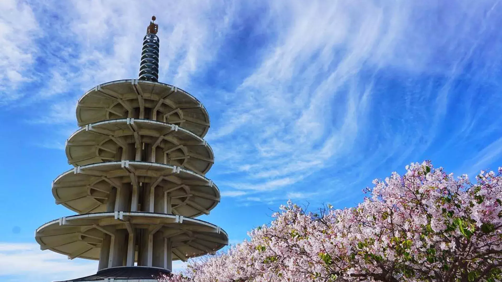
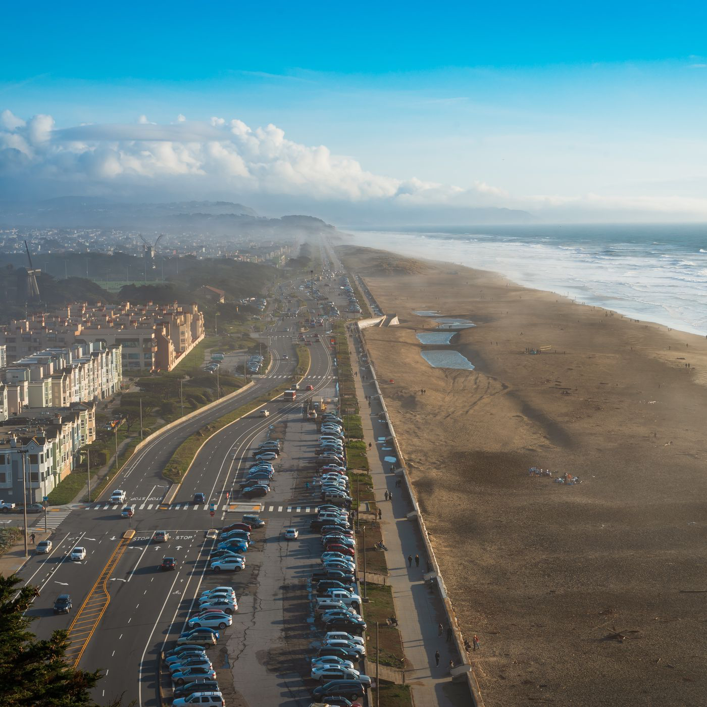
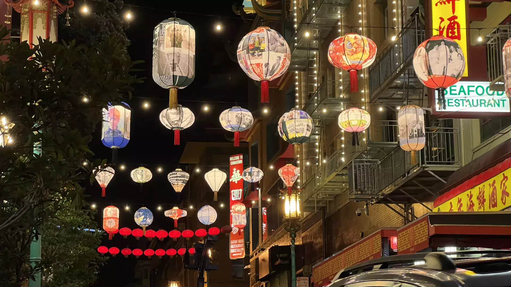
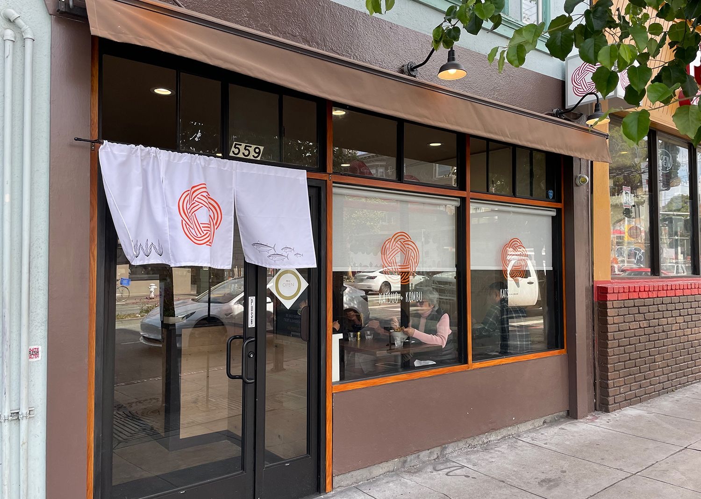
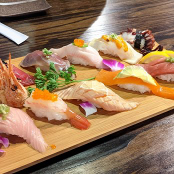
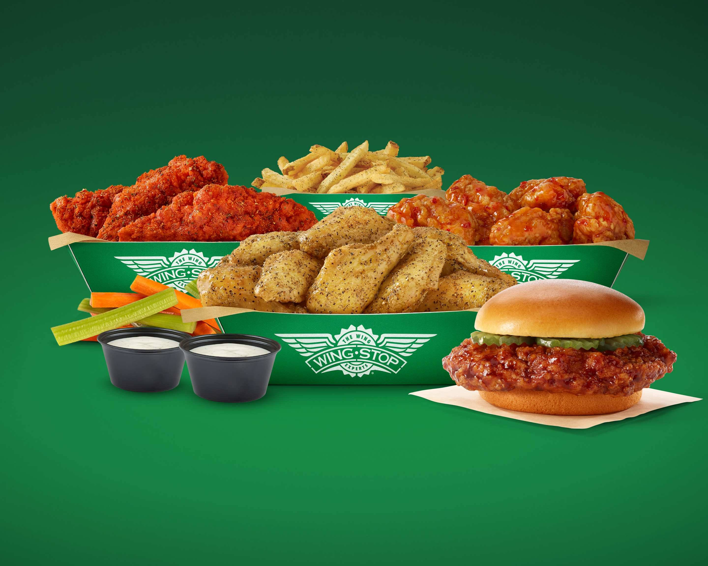
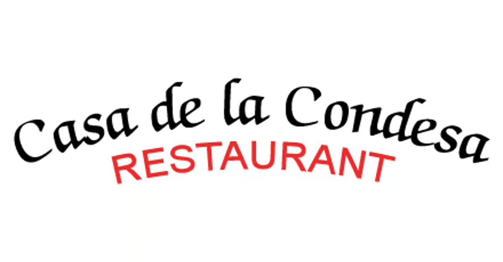

Top Five Places/Food To Visit in SF
these are just a few things I have categorized throughout the years
- Japantown
Japantown is one of my favorite spots because it has a lot of shops as well as restaurants for any occassion. Some of my
favorite places inlclude Jina's Bakery as well as the bookstore!

- Ocean Beach
I love Ocean Beach at night especially because it has a amazing view and is a great place to bring friends.

- Market Street(ferry building)
The ferry building will always be one of my top spots because its the first place my parents visited when coming to SF. It has good food
and the farmers market is always nice to stroll around.

- Ina Coolbrith Park at night
Has one of the best night views of SF and is easily accesible by Muni!

- Chinatown
Will always be a number one tourist spot but for good reason. The night markets are great with good food and entertainment.

Top Food To Visit
- Katsuo & Kombu
My top restaurant of all time;food is amazing,high quality,and fresh.

- Rocket Sushi
Best sushi place with the largest portions. I take my friends here all the time for a good dinner.

- Wingstop
Pretty self-explanatory; Amazing food with decet prices and is a must have for a late night in or after a long night out.

- Casa De La Condesa
Hands down one of the best if not the best mexican spot in SF, my parents visit this spot everytime they visit for its authenticity and how it reminds them of home.

- Powder
This is a shaved ice spot I discovered recently and have been going to often. Great options and portion for the price!